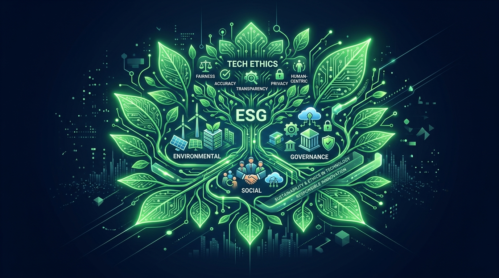

負責任領導與永續未來 Responsible Leadership
Responsible Leadership for a Sustainable Future Responsible Leadership for a Sustainable Future
18 週知識終極大融會、2035 CEO 圓桌論壇、領導力承諾書與個人作品集 18-Week Synthesis, 2035 CEO Roundtable, Leadership Commitment & Portfolio

本學期 18 週全景學習地圖終極融合 Full 18-Week Learning Journey Synthesis
Mod 1: Foundations
Ethics • CSR • CSVW1-3 Foundations
Mod 2: ESG Core
E/S/G • GRI StandardsW4-8 ESG Tools
Mod 3: Strategy
Finance • Chain • AIW9-12 Strategy
Mod 4: Practice
Cases • Crisis • PitchW13-15 Applied
Mod 5: Leadership
Board • Future LeadershipW16-18 Leadership
企業永續管理整合架構 Enterprise Sustainable Management Framework
Ethics → Governance → ESG → Strategy → Innovation → Resilience → LeadershipEthics -> Governance -> ESG -> Strategy -> Innovation -> Resilience -> Leadership
這套 7 階架構將倫理思維、治理內控、ESG 指標、商業創新與黑天鵝韌性，最終昇華為負責任的領導力！ A 7-tier continuum integrating ethics, ESG tools, strategy, and resilience into leadership.
Responsible Leadership 5 大觀念架構 Responsible Leadership 5 Core Pillars
1. Integrity
誠信不妥協Integrity
2. Accountable
勇於擔當責任Accountability
3. Transparent
資訊公開透明Transparency
4. Inclusiveness
多元社會包容Inclusiveness
5. Long-term
創造長遠價值Long-term value
從管理者 (Manager) 到領導者 (Leader) Transitioning from Manager to Responsible Leader
從短期 KPI 交易走向變革使命與價值創造Shifting from Task Execution to Purpose-Driven Value
你們不再是單純執行指令的管理者，而是能在利益衝突中守護倫理底線、引領組織創新的 Responsible Leader！ Empowering you to step beyond task management and lead with purpose and ethical courage.
2035 年企業將面臨的 6 大極限挑戰 6 Enterprise Challenges in 2035
1. AI Autonomy
AI 自主決策倫理與歸責。AI autonomous decisions
2. Net Zero 2050
強制去碳與能源系統變革。Mandatory net zero speed
3. Natural Capital
TNFD 自然資本與生態系。TNFD & natural capital
AI 與自主決策倫理治理 (AI Autonomy) AI & Autonomous Decision Governance
演算法責任歸屬與人類監督機制 (Human-in-the-Loop)Algorithmic Accountability & Human-in-the-Loop
當 AI 獨立決定貸款發放、招聘與自動駕駛時，領導者必須建立透明審查與責任追究流程，維護數位倫理。 Ensuring human-in-the-loop oversight for automated AI decision-making systems.
淨零轉型與氣候治理 (Net Zero 2050) Climate Transition & Energy Governance
能源結構翻轉與全價值鏈去碳戰略Energy Infrastructure Transition & Value Chain Decarbonization
2035 年前完全去碳化將成為企業參與國際頂尖供應鏈的門檻條件，領導者需大規模部署綠電與低碳技術。 Deploying renewables and low-carbon tech as non-negotiable supply chain entry permits.
生物多樣性與自然資本 (TNFD) Nature & Biodiversity Protection (TNFD)
將天然水資源與森林生態系納入財務會計Accounting Natural Capital on Corporate Balance Sheets
保護生態系與自然資本 (Natural Capital) 成為與減碳同等重要的指標，領導者需貫徹 Net Positive 生態正回饋。 Incorporating ecosystem preservation and biodiversity impacts into standard corporate disclosures.
全球供應鏈重組與友岸外包 (Reshoring) Global Supply Chain Reconfiguration
從最低成本轉向最高韌性與可信網絡Transitioning from Lowest Cost to Highest Trust Networks
地緣政治推動供應鏈重組，領導者必須建立在地化、模組化且符合最高人權與低碳標準的代工網絡。 Building resilient, localized, and human-rights-compliant supply networks under geopolitics.
數位信任與網路安全防衛 (Digital Trust) Digital Trust & Cybersecurity Protection
捍衛客戶隱私與建立誠信品牌的底線防線Defending Customer Privacy & Brand Integrity Baseline
資安即是倫理。領導者需部署零信任 (Zero Trust) 資安體系，確保數據與 AI 服務免於勒索軟體與隱私外洩。 Deploying Zero Trust cybersecurity frameworks to protect customer privacy and AI services.
地緣政治與企業全方位韌性 (Resilience) Geopolitical Volatility & Corporate Resilience
在多極化地緣政治衝突中的彈性應變體系Hedging Multi-polar Geopolitical Risks
面對關稅大戰與貿易壁壘，領導者需靈活部署備援產能與多國合規對策，確保企業在黑天鵝襲來時屹立不搖。 Managing tariff conflicts and trade barriers with flexible multi-country manufacturing backups.
未來 CEO 的 5 大能力地圖 Future CEO Competency Map
1. Ethical Radar
倫理雷達：精準抓出隱性風險Ethical risk radar
2. Systems Thinking
系統思考：掌控複雜網絡Systems thinking
3. Sustainability
永續策略：驅動 CSV 共享CSV sustainability
4. Collaboration
跨界協商：對齊多方利益Cross-sector alignment
5. AI Literacy
AI 素養：引領數位轉型AI & tech literacy
Future CEO Roundtable Future CEO Roundtable Workshop
任務：各組以「2035 CEO 圓桌論壇」形式發表前瞻對策2035 CEO Roundtable Forward-Looking Debrief
1. 選擇議題 (AI/氣候/循環經濟/資安/人權)
2. 闡述該議題為何對 2035 企業最關鍵
3. 剖析對營運與商業模式的潛在影響
4. 提出 CEO 的 3 項前瞻回應策略
未來的 CEO 必須將挑戰翻轉為新商業契機 Activity 1: Turning Challenges into Moats
教師觀點帶出 (Key Takeaway)：Faculty Debrief:
「圓桌論壇展現了高階企管人的視野：把氣候關稅、AI 規範與資安要求，轉化為競爭對手難以跨越的 VRIO 綠色護城河！」 "Transforming regulatory hurdles and ESG challenges into unassailable VRIO moats."
我的領導風格 (Authentic Leadership) My Authentic Leadership Style
探索真誠領導、服務型領導與變革型領導Discovering Authentic, Servant & Transformational Leadership
明確你的領導風格：真誠領導 (Authentic Leadership) 用言行一致贏得跟隨者；變革型領導 (Transformational Leadership) 用使命感激發團隊！ Building your leadership style around authenticity, purpose, and team empowerment.
我最重視的三項個人核心價值觀 My 3 Non-Negotiable Core Values
1. Integrity (誠信)
黑夜無人之處依然堅持正道。Uncompromising honesty
2. Fairness (公平)
尊重利害關係人正當權益。Equitable stakeholder respect
3. Sustainability (永續)
為下一代創造共榮價值。Intergenerational stewardship
Ethics in Action (日常商業決策中的實踐) Living Ethics Daily in Corporate Decisions
拒絕黑箱關痛點、尊重多元與維持資訊透明Rejecting Shady Deals & Driving Transparency
倫理不是高高在上的口號！在採購合約、績效考核、產品發布與財務報表中，貫徹對同仁與顧客的誠信防線。 Practicing integrity in daily procurement deals, performance reviews, and financial reports.
5 年職涯與學習行動藍圖 (Career Roadmap) 5-Year Career & Learning Action Roadmap
將 ESG 永續思維融入個人職場專業晉升Embedding ESG Thinking into Professional Career Growth
規劃 5 年個人職涯：不論是在投資銀行、半導體供應鏈、消費品行銷或 AI 技術研發，發揮綠色與倫理影響力。 Mapping personal career milestones to champion sustainability in finance, tech, or marketing.
Lifelong Learning (終身學習承諾) Lifelong Learning Commitment
在快速變革的科技與氣候時代保持好奇與演進Continuous Adaptation in the AI & Climate Era
學期的結束是領導說服力的起點！持續閱讀國際頂尖報告 (ISSB/TCFD/EU AI Act)，保持謙遜與長線學習動力。 Committing to lifelong learning as regulations, AI models, and climate frameworks evolve.
Responsible Leadership Commitment Leadership Commitment Workshop
任務：撰寫個人「Responsible Leadership 承諾書」Drafting Your Responsible Leadership Commitment
1. 我希望成為什麼樣的管理者？
2. 我將堅持的三項倫理原則
3. 我認為企業最大的社會責任
4. 我未來五年的職涯與學習目標
全班宣讀與教師圓滿總結 Commitment Recitation & Final Class Closing
共同見證並保存個人承諾書作為成長紀念Witnessing Personal Commitments into Lifelong Mindsets
學生代表宣讀承諾書，全班簽署保存。教師感言：帶著這份倫理勇氣走入職場，你們將成為改變商業世界的負責任領導者！ Holding tight to your ethical compass as you enter the global corporate stage.
18 週完整學習歷程大結業總融會 18-Week Complete Learning Journey Synthesis
Mod 1: Ethics
倫理思維與 CSV 共享Ethics & CSV
Mod 2: Tools
E/S/G 構面與 GRI 揭露ESG & Disclosure
Mod 3: Strategy
金融、 Scope 3 與 AIFinance, Chain, AI
Mod 4: Practice
案例、危機與 CapstoneApplied Capstone
Mod 5: Leader
董事會決策與未來領導Board & Leadership
推薦大師閱讀書單 (Recommended Books) Recommended Masters' Booklist
Net Positive
Paul Polman
Conscious Capital
John Mackey
Infinite Game
Simon Sinek
Doughnut Econ
Kate Raworth
The Age of AI
Henry Kissinger
Call to Action & Homework 18 Call to Action & Homework 18
Take Responsibility, Create Sustainable Value! 結業宣告Take Responsibility, Create Sustainable Value!
恭喜圓滿完成 18 週 AACSB 頂尖規格課程！帶上誠信與勇氣，開啟你的永續領導人職涯！Congratulations on graduating from this 18-week AACSB top-tier course!
Homework 18：個人期末成果集 (Portfolio 約 2,000–2,500 字)Homework 18: Personal Leadership Portfolio (~2,000-2,500w)
個人完成：18週學習回顧、案例反思、顧問專題摘要、董事會模擬心得與個人 Responsible Leadership Manifesto。 Individual Portfolio: 18-week review, case insights, Capstone summary, Board reflection & Manifesto.